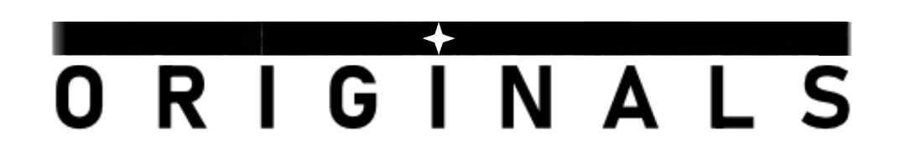

Where worlds are Unmade and Reimagined — Hier werden Welten Aufgelöst und Neu Erdacht — 世界が壊され、再び織られる場所 — Donde los mundos son Deshechos y Reimaginados — Where worlds are Unmade and Reimagined — Là où les mondes se Défont et se Réimaginent — 世界が壊され、再び織られる場所 — Waar werelden worden Ontmaakt en Opnieuw Verbeeld — Hier werden Welten Aufgelöst und Neu Erdacht — 世界が壊され、再び織られる場所 — Where worlds are Unmade and Reimagined — Nơi thế giới và ký ức Tan Vỡ và Tái Tạo lại — Gdzie światy są Rozplatane i Przekute


UPCOMING TRANSMISSION
[ from_領コア ]
SIGNAL STRENGTH：recalibrating
KOMMENDE ÜBERTRAGUNG
[ aus_領コア ]
SIGNALSTÄRKE：rekalibrierung
PRÓXIMA TRASPASO
[ desde_領コア ]
INTENSIDAD DE LA SEÑAL：
recalibrando
recalibrando
PROCHAIN TRANSFERT
[ depuis_領コア ]
FORCE DU SIGNAL：
en cours de recalibrage
en cours de recalibrage
KOMENDE TRANSMISSIE
[ van_領コア ]
SIGNAALSTERKTE：herkalibrerend
LÀN SÓNG KẾ TIẾP
[ đếntừ_領コア ]
CƯỜNG ĐỘ TÍN HIỆU：đang khuếch đại
NADCHODZĄCA TRANSMISJA
[ z_領コア ]
SIŁA SYGNAŁU：rekalibracja